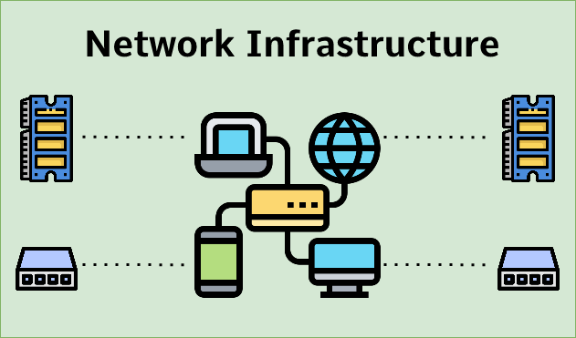

Project 1 | Sunny
Internationale website voor Sunny
In periode 1 van jaar 1 moest onze groep INF1C een website maken voor het bedrijf Sunny. Sunny was een sokken bedrijf die duurzame sokken verkocht op websites zoals bol.com. Sunny wou vanwege het succes in nederland ook internationaal de sokken kunnen verkopen d.m.v. een website.
Project 2 | Morgenster

Uitwerken en maken infrastructuur voor Morgenster
In periode 2 van jaar 1 moet Ik met mijn project groep een infrastructuur opzetten voor een basisschool De Morgenster. Dit houd in dat wij heel het netwerk werkende maken en bepaalde systemen zoals Samba en nginx werkende krijgen.